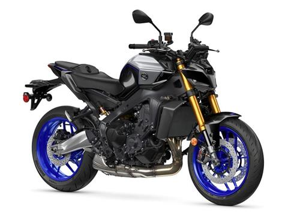

О бренде Yamaha
Yamaha Motor Company — японская компания, производитель мотоциклов, морской техники, гидроциклов и других транспортных средств. Основана в 1955 году как подразделение компании Yamaha Corporation.
Yamaha Motor известна своими инновационными разработками, качеством и надежностью продукции. Компания обладает обширным модельным рядом мотоциклов разных классов: от спортивных до туристических и круизеров.
Популярные модели
| Модель | Класс | Объем двигателя | Мощность | Вес |
|---|---|---|---|---|
| YZF-R1 | Спортбайк | 998 куб. см | 200 л.с. | 199 кг |
| MT-09 | Нейкед | 889 куб. см | 119 л.с. | 189 кг |
| Tracer 9 GT | Туристический | 889 куб. см | 115 л.с. | 220 кг |
| XSR900 | Ретро | 889 куб. см | 119 л.с. | 193 кг |
| Ténéré 700 | Эндуро | 689 куб. см | 73 л.с. | 204 кг |
Особенности мотоциклов Yamaha
- Инновационные технологии: системы контроля тяги, электронное управление дроссельной заслонкой, режимы движения
- Легендарный дизайн: узнаваемый стиль и эргономика
- Надежность: высокое качество сборки и долговечность
- Универсальность: от городских поездок до дальних путешествий и спортивных трасс
- Широкая дилерская сеть и доступность запчастей по всему миру
- Богатая гоночная история и многочисленные победы в мотогонках различных классов
Галерея
